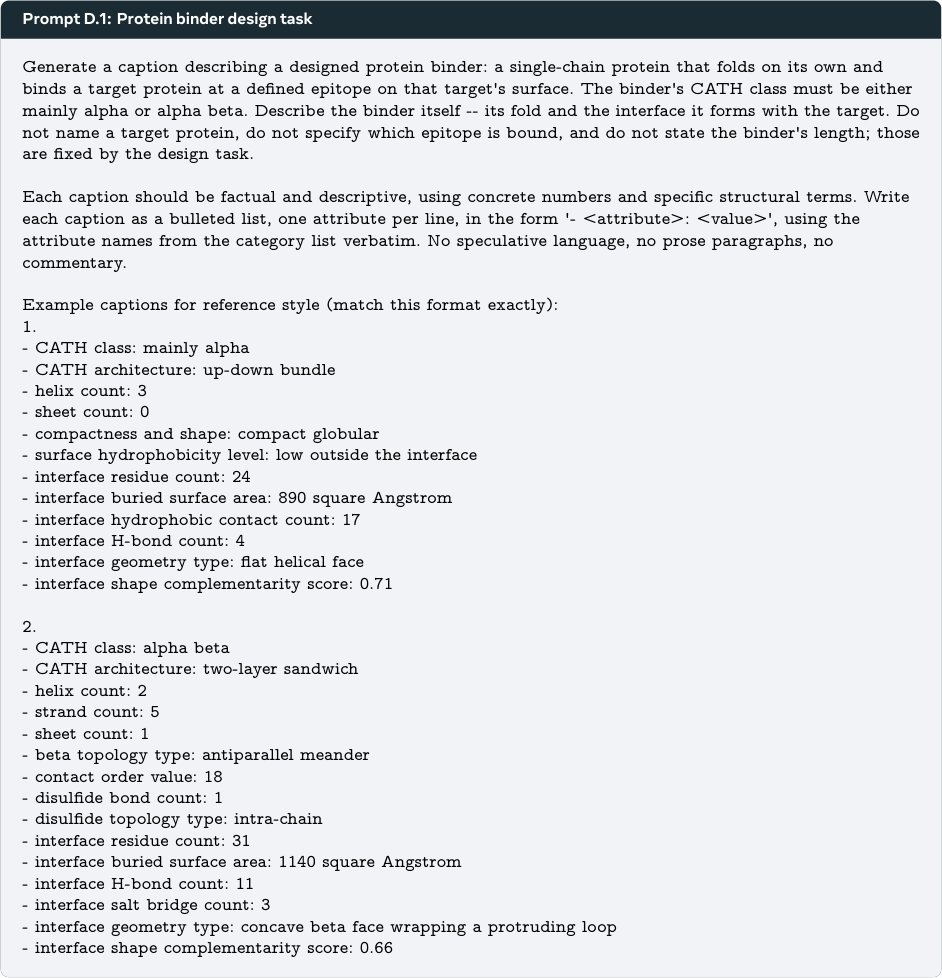

Zarlar bilan rejalashtirish: neyron tarmoqlarni xilma-xil javoblar berishga majburlash

Gacha Decoding usuli kontent yaratishni tokenlar ehtimolligidan ko'rsatmalarga amal qilish sohasiga o'tkazadi. Modelning ichki entropiyasiga tayanmasdan, tizim g'oyalarni tanlash uchun tashqi tasodifiylikdan foydalanadi. Bu hatto bir xillikka moyil bo'lgan modellardan ham sifatli va xilma-xil javoblar olish imkonini beradi.
Asosiysi
- Usul modelning token entropiyasiga emas, g'oyalarni tanlash uchun tashqi tasodifiylikka tayanadi.
- Javoblar xilma-xilligi model quvvati bilan birga o'sadi, bu sifat va xilma-xillik o'rtasidagi ziddiyatni yo'q qiladi.
- Samaradorlik chat, ijodiy yozish, tasvir yaratish va oqsil dizayni kabi sohalarda isbotlangan.
Batafsil
An'anaviy til modellari ko'pincha javoblarning «torayishi» muammosiga duch keladi, bunda model sifati oshgani sayin ijodkorlik pasayadi. Gacha Decoding usuli bu muammoni generatsiya jarayonini bosqichlarga ajratish orqali hal qiladi: semantik o'qlarni rejalashtirish, variantlarni sanab o'tish va tashqi tasodifiy sonlar generatori (RNG) yordamida bittasini tanlash. Bu jarayonni «g'oyalar makoni»dagi avtoregressiv jarayonga aylantiradi, bunda har bir qaror avvalgilariga bog'liq bo'ladi.
Tadqiqot shuni ko'rsatdiki, ushbu yondashuv Vendi Score metriki bo'yicha mavjud xilma-xillik usullaridan 2,4 baravar ustunlik qiladi. Sifatli natijaga erishish uchun zarur bo'lgan tanlovlar soni 11 baravar qisqaradi. Usul har qanday model ustidan qo'shimcha qatlam sifatida ishlaydi va uning ko'rsatmalarga amal qilish qobiliyatidan foydalanib, yakuniy matnga aylanadigan xilma-xil rejalarni shakllantiradi.
Cheklovlar
Usul rejalashtirish va variantlarni sanab o'tish uchun modelga qo'shimcha so'rovlarni talab qiladi, bu esa generatsiya vaqtini oshiradi.
Maqolaning batafsil tahlili
Annotatsiya
Biz Gacha Decoding usulini taqdim etamiz — bu model ishlash vaqtidagi (inference-time) usul bo‘lib, til modellaridan (LM) turli xil javoblarni olish imkonini beradi va model quvvati ortishi bilan birga masshtablanadi. Usul ochiq domenlarda: kundalik suhbatlar, ijodiy yozish, tasvirlarni generatsiya qilishni rejalashtirish va oqsillar dizaynida yuqori samaradorlik ko‘rsatdi. Gacha Decoding sifatni saqlab qolgan holda xilma-xillik bo‘yicha mavjud yondashuvlardan ustun keladi (Vendi ko‘rsatkichi bo‘yicha eng yaxshi muqobil usuldan 2.4 barobar yaxshiroq) va 11 barobar kamroq namunalar bilan sifatli modalar soniga erishadi. Asosiy g‘oya xilma-xillikni ko‘rsatmalarga amal qilish (instruction-following) vazifasi sifatida qayta ko‘rib chiqishdir: tokenlar entropiyasiga tayanmasdan, biz modelning ko‘rsatmalarga amal qilish qobiliyatini tashqi tasodifiy sonlar generatori (RNG) bilan birlashtiramiz. Ushbu «zarlar bilan rejalashtirish» yondashuvi xilma-xillik va model qobiliyati o‘rtasidagi ziddiyatni bartaraf etadi. Asosiy LM ko‘rsatmalarga amal qilishda yaxshilangani sari, Gacha Decoding yordamida xilma-xillik tokenlar entropiyasi pasaysa ham doimiy ravishda ortib boradi.
Muhim
Gacha Decoding javoblar xilma-xilligini 2.4 barobar oshiradi va zarur namunalar sonini 11 barobar qisqartiradi, generatsiya jarayonini ko‘rsatmalarga amal qilish vazifasiga aylantiradi.
1-rasmda usulning Verbalized Sampling yondashuvi bilan solishtirganda ishlashi ko‘rsatilgan. Gacha Decoding noyob matnli promptlarni shakllantirish uchun tashqi tasodifiy parametrlardan foydalanadi, bu esa modelga yanada xilma-xil vizual konsepsiyalarni yaratish imkonini beradi. Modelning ichki ehtimollik noaniqligiga tayanadigan standart usullardan farqli o‘laroq, Gacha Decoding jarayonni tashqi ko‘rsatmalar orqali faol boshqaradi, bu InfinityChat ma’lumotlar to‘plamidagi natijalar bilan tasdiqlanadi.
Izoh
Vendi Score — bu generatsiyalar xilma-xilligini baholash uchun ishlatiladigan metrika bo‘lib, yuqori qiymatlar noyob va sifatli javoblar spektrining kengligini bildiradi.
Kirish
Til modellarida xilma-xillik muammosi
Zamonaviy til modellari (LM) ijodiy va tadqiqot vazifalari uchun tobora ko‘proq foydalanilmoqda, ammo ularda insoniy xilma-xillik va yangilik yetishmaydi. Hatto ochiq so‘rovlarda ham modellar odatiy javoblar to‘plamiga tushib qoladi. Bu foydalanuvchilar uchun foydalilikni kamaytiradi, sintetik ma’lumotlarni yaxshilash imkoniyatlarini cheklaydi va uzoq muddatda fikrlashning bir xillashishiga olib keladi. Ilgari tadqiqotchilar bu muammoni tokenlar taqsimoti entropiyasini o‘zgartirish (namuna olish parametrlarini o‘zgartirish, maxsus yo‘qotish funksiyalari yoki o‘quv ma’lumotlarini tanlash) orqali hal qilishga urinishgan. Biroq, bu yondashuv ziddiyatni keltirib chiqaradi: model sifatini oshirish usullari ko‘pincha entropiyani kamaytiradi, natijada model qobiliyati o‘sishi bilan xilma-xillik pasayadi.
Muhim
Mualliflar sifat va xilma-xillik o‘rtasidagi ziddiyat fundamental emasligini isbotlab, xilma-xillikni token entropiyasi emas, balki ko‘rsatmalarga amal qilish (instruction following, IF) muammosi sifatida ko‘rib chiqishni taklif qilishadi.
Gacha Decoding usuli
Mualliflar Gacha Decoding usulini taqdim etadilar — bu modelning ko‘rsatmalarga amal qilish qobiliyatini tashqi tasodifiy sonlar generatori (RNG) bilan birlashtiruvchi inferens usuli. Har bir tokenni tanlashda tasodifiylikka tayanish o‘rniga, model «zarlar bilan rejalashtiradi» (2-rasmga qarang). Har qanday vazifa uchun model avval semantik qarorlar ketma-ketligini (masalan, hikoyadagi personajlar yoki muhitni) belgilaydi, so‘ngra tashqi RNG yordamida o‘zi taklif qilgan variantlardan birini tanlaydi. Har bir qaror avvalgilariga bog‘liq bo‘lib, bu o‘zgaruvchanlikning kombinatorik tarzda to‘planishiga imkon beradi.
Izoh
Gacha Decoding — bu model ustidagi yengil qobiq bo‘lib, u avtoregressiv generatsiyani tokenlar darajasidan g‘oyalar darajasiga ko‘chiradi.
Ijodiy yozish, tasvir yaratishni rejalashtirish va oqsil dizayni bo‘yicha o‘tkazilgan tajribalarda Gacha Decoding mavjud usullardan ustun keldi va Vendi-score metriki bo‘yicha 2,4 baravargacha xilma-xillik o‘sishini ta’minladi (1A-rasm). Eng muhimi, Gacha Decoding xilma-xilligi model quvvati bilan birga o‘sadi, hatto standart usullar pasayish ko‘rsatgan taqdirda ham (1B-rasm). Usul hatto deterministik ochko‘z dekodlash (greedy decoding) sharoitida ham samarali ishlaydi.
Umumiy ko'rinish: Gacha Decoding nima?
Biz til modellaridan (LM) turli xil generatsiyalarni olish uchun Gacha Decoding usulini taqdim etamiz. Asosiy g'oya modelning mantiqiy fikrlash jarayonini tasodifiylik bilan boyitishdir. Jarayon ikki bosqichdan iborat: model natijaga ta'sir qiluvchi qarorlar ketma-ketligini belgilaydi, so'ngra har bir qaror mumkin bo'lgan variantlarni sanab o'tish va tashqi tasodifiy sonlar generatori (RNG) yordamida tanlash orqali amalga oshiriladi. Masalan, it haqida hikoya yozishda model avval muhitni (masalan, zamonaviy shahar yoki tarixiy Yaponiya) «tasodifiy tanlash» orqali belgilaydi. Keyingi qarorlar, masalan, itning roli yoki hikoya nuqtai nazari, ushbu tanlovga bog'liq bo'ladi, bu esa syujet shakllanishi davomida xilma-xillikning to'planishiga imkon beradi. Gacha Decoding xilma-xillik manbasini tokenlar entropiyasidan ko'rsatmalarga amal qilishga o'tkazadi. Amalda, bu g'oyalar fazosidagi randomizatsiyalangan avtoregressiv jarayon bo'lib, uni mavjud model ustiga agentlik qatlami sifatida o'rnatish mumkin.
Muhim
Gacha Decoding tokenlarning ehtimollik taqsimotiga tayanmasdan, tashqi tasodifiy tanlovlar yordamida qarorlar qabul qilish orqali generatsiya xilma-xilligini ta'minlaydi.
Ko'rsatmalarga amal qilish va rejalashtirish orqali xilma-xillik
Biz usulning ishlashini ta'minlovchi uchta asosiy dizayn elementini ajratib ko'rsatamiz: semantik g'oyalar fazosida ishlash, variantlarni sanab o'tish va tanlash bosqichlarini ajratish hamda jarayonning avtoregressiv tabiati. 1-algoritmda ko'rsatilganidek, jarayon ikki fazaga bo'linadi. Birinchi fazada model javobni shakllantiradigan T ta semantik qaror o'qlarini belgilaydi, bunda ularning aniq qiymatlari hali belgilanmaydi. Ikkinchi fazada, t=1 dan T gacha bo'lgan har bir qadam uchun model joriy a_t o'qi uchun promptega va oldin qabul qilingan z<t qarorlarga asoslanib, C_t to'plamdagi mantiqiy va semantik jihatdan farqli variantlarni sanab o'tadi. Keyin tashqi RNG yordamida C_t to'plamidan z_t varianti bir xil ehtimollik bilan tanlab olinadi.
Izoh
Semantik g'oyalar fazosi — bu model alohida so'zlar yoki tokenlar bilan emas, balki tushunchalar (masalan, «muhit» yoki «personaj xarakteri») bilan ishlaydigan abstraksiya darajasidir.
G'oyalar fazosida ishlash
Javobni shakllantirish jarayoni uch bosqichdan iborat: qarorlarni yakuniy rejaga birlashtirish, tashqi tasodifiy sonlar generatori (TSG) yordamida bitta rejani tanlash va tanlangan reja asosida y matnini yaratish. Yakuniy javob ehtimolligi p(y/ x) = \prodt=1T p_ heta(yt/ x, y<t) formulasi bilan aniqlanadi. Tokenlarni standart tanlash usuli cheklangan, chunki u model entropiyasiga bog'liq va semantik xilma-xillikni to'liq qamrab olmaydi. Mualliflar z latent o'zgaruvchisini (g'oya yoki reja) kiritib, yuqori darajadagi semantika va sirtqi realizatsiyani p(y/ x) = \int p_ heta(y/ z, x) q(z/ x) dz formulasi orqali ajratadilar.
Muhim
Gacha Decoding usuli xilma-xillikni tokenlar darajasidan semantik rejalar darajasiga o'tkazadi va tanlov uchun tashqi tasodifiylikdan foydalanadi.
Modelning o'zi reja z ni to'g'ridan-to'g'ri generatsiya qiladigan usullardan farqli o'laroq, Gacha Decoding modeldan C xil variantlar to'plamini sanab o'tishni so'raydi va tanlovni tashqi TSG ga topshiradi. Bu modelning ko'rsatmalarga amal qilish (IF) qobiliyatidan foydalanishga imkon beradi. Kontekst oynasi cheklovlarini chetlab o'tish uchun mualliflar g'oyalarni avtoregressiv tanlashni qo'llaydilar: q(z/ x) = \prodt=1T q(zt/ x, z<t). Bu har bir keyingi tanlov avvalgisiga bog'liq bo'lgan kombinatorik traektoriyalarni yaratishga imkon beradi.
Izoh
Avtoregressiv tanlash — bu qarorlarni bosqichma-bosqich qabul qilish jarayoni bo'lib, har bir qadam oldingi natijalarga asoslanadi.
Eksperimental sozlamalar
Gacha Decoding samaradorligi uchta sohada sinovdan o'tkaziladi: chat-botlar, ijodiy yozish va tasvirlarni generatsiya qilish uchun promptlarni qayta yozish, shuningdek oqsillar dizayni bo'yicha pilot tadqiqot. Har bir x_i prompt uchun N ta javob to'plami yaratiladi. Sifat «sifat bo'yicha filtrlangan» xilma-xillik ko'rsatkichi orqali baholanadi: faqat sifati standart to'g'ridan-to'g'ri tanlashdagi o'rtacha ko'rsatkichning 95% dan yuqori bo'lgan javoblar hisobga olinadi.
Ehtiyot bo'ling
Xilma-xillik ko'rsatkichi past sifatli javoblar hisobiga sun'iy ravishda oshib ketmasligi uchun sifat bo'yicha normallashtiriladi.
Modellar, bazaviy liniyalar va oldingi yondashuvlar
Biz GachaDecoding samaradorligini baholash uchun bir qator mavjud diversifikatsiya usullari bilan solishtirdik. Birinchisi, standart va yuqori (1.5) haroratda to‘g‘ridan-to‘g‘ri namuna olish (Direct sampling). Ikkinchisi, «ro‘yxatli promptlash» (List prompting) bo‘lib, unda modelga bir martalik generatsiyada k ta turlicha javob berish buyuriladi; avvalgi javoblar kontekstda qolgani uchun model takrorlanishdan qochadi. Shuningdek, biz «verbalizatsiyalangan namuna olish» (Verbalized Sampling) usulini qo‘lladik, bunda model k ta javob va ularning ehtimolliklarini bir vaqtda chiqaradi. «To‘g‘ridan-to‘g‘ri rejalashtirish» (Direct Planning) esa jarayonni ikki bosqichga ajratadi: 1.2 haroratda yuqori darajadagi reja tuzish va unga asoslanib yakuniy javobni shakllantirish. Bundan tashqari, tasodifiy ASCII satrlari yordamida «sid-promptlash» (Seed Prompting) va oldindan belgilangan to‘plamdan tanlangan personajlar yordamida «persona-promptlash» (Persona Prompting) usullari sinab ko‘rildi.
Izoh
«Persona-promptlash» usuli tasodifiy belgilar ketma-ketligidan farqli o‘laroq, mazmunli rollar orqali javoblar xilma-xilligini boshqaradi.
Baholangan modellar
Biz ochiq (GPT-OSS, Inkling, Qwen 3.5 oilalari) va yopiq (Claude Opus 4.8, GPT 5.5) til modellarini baholadik. Barcha holatlarda «fikrlash rejimi» (thinking mode) va tavsiya etilgan parametrlar ishlatildi. API modellarida fikrlash rejimi bilan haroratni o‘zgartirib bo‘lmasligi sababli, yuqori haroratni talab qiladigan usullar ular uchun qo‘llanilmadi.
Ehtiyot bo'ling
Cheklov: API modellarida fikrlash rejimida haroratni sozlash imkoniyati yo‘qligi sababli, ba'zi usullar ularda qo‘llanilmadi.
Ochiq baholash domenlari
Javoblar sifati va xilma-xilligi uchta sohada o‘lchandi. «In-the-wild chat» uchun InfinityChat ma'lumotlar to‘plami ishlatildi. Xilma-xillik javoblar embeddinglari orasidagi masofa (Vendi score) bilan, sifati esa LM-judge orqali o‘lchandi. Ijodiy yozish (Creative writing) bo‘yicha WildChat asosida hikoyalar 0–20 ball tizimida baholandi. Xilma-xillik sakkizta semantik atribut (janr, syujet, qahramon va h.k.) bo‘yicha Vendi score makro-o‘rtachasi orqali hisoblandi, bu esa leksik farqlardan ko‘ra mazmuniy o‘zgarishlarni yaxshiroq aks ettiradi.
Tasvir generatsiyasida foydalanuvchi prompti x ni x' ga kengaytirish bosqichida usullar sinaldi. OneIGBench promptlari va Qwen-Image-2512 modeli ishlatildi. Sifat asl promptga mosligi bilan, xilma-xillik esa DreamSim embeddinglari bo‘yicha Vendi score bilan o‘lchandi. Asosiy natijalar Rasm 3 da keltirilgan.

Muhim
Semantik atributlar bo‘yicha Vendi score va DreamSim embeddinglarini qo‘llash mazmuniy xilma-xillikni aniq o‘lchash imkonini beradi.
Gacha Decoding ustunligi va masshtablanishi
Gacha Decoding mavjud yondashuvlardan sezilarli darajada ustun keladi va bu farq generatsiya hajmi oshgani sayin ortib boradi. Asosiy natija shundaki, usul sifatni saqlab qolgan holda xilma-xillikni keskin oshiradi. Masalan, Opus 4.8 modelida har bir so‘rov uchun 256 ta generatsiya bilan Gacha Decoding to‘g‘ridan-to‘g‘ri namuna olishga (direct sampling) nisbatan sifat bilan nazorat qilinadigan xilma-xillikni 7,1 barobarga oshiradi. Samaradorlik nuqtai nazaridan, usul «list prompting» bazaviy usuliga qaraganda 4,7 barobar kamroq generatsiyalarni talab qiladi (3-rasm).
Muhim
Gacha Decoding persona prompting usuliga nisbatan 11,0 barobar, boshqa usullarga nisbatan esa 38 barobargacha yuqori samaradorlikni ta’minlaydi.
Usul boshqa usullar yetib bora olmaydigan yangi javob turlarini kashf etish imkonini beradi. Masalan, Singapurdagi kvartira haqida dahshatli hikoya yozish so‘ralganda, Gacha Decoding ikkinchi shaxs nomidan hikoyalar yaratadi, boshqa usullar esa uchinchi shaxs bilan cheklanib qoladi (S6-rasm). Tasvir generatsiyasida xilma-xillik vizual jihatdan yaqqol ko‘rinadi (1-rasm).
Gacha IF qobiliyatlari bilan masshtablanadi va ochko‘z dekodlashda ham ishlaydi
Usul modelning token entropiyasiga emas, balki ko‘rsatmalarga ergashish (Instruction Following, IF) qobiliyatiga tayanadi. Bu shuni anglatadiki, modelning IF qobiliyati oshishi bilan xilma-xillik ham ortadi va hatto ochko‘z dekodlash (greedy decoding) holatida ham saqlanib qoladi.
Izoh
Ochko‘z dekodlash (greedy decoding) — model har doim eng yuqori ehtimollikka ega tokenni tanlaydigan jarayon bo‘lib, u odatda javoblarni bir xil va deterministik qiladi.
IF qobiliyatlari bilan masshtablanish
To‘g‘ridan-to‘g‘ri namuna olishdan farqli o‘laroq, Gacha Decoding IF qobiliyatlari bilan ijobiy korrelyatsiyani ko‘rsatadi. Qwen 3.5 modellari (2B dan 27B gacha) va IFBench metriklari yordamida o‘tkazilgan sinovlar (4-rasm) shuni ko‘rsatadiki, to‘g‘ridan-to‘g‘ri namuna olishda model kuchi oshishi bilan xilma-xillik pasayadi, Gacha Decoding esa barcha domenlarda barqaror o‘sishni namoyish etadi. Usul «list prompting» kabi yondashuvlarning cheklovlarini yengib o‘tadi, chunki u tashqi tasodifiy sonlar generatori (RNG) bilan g‘oyalar fazosida avtoregressiyadan foydalanadi.
Ochko‘z dekodlashda xilma-xillik
Hatto ochko‘z dekodlash rejimida ham (Qwen 3.5 27B, GPT-OSS va Inkling modellarida) Gacha Decoding yuqori xilma-xillikni saqlab qoladi va ko‘pincha haroratli namuna olish (temperature sampling) bilan ishlaydigan bazaviy usullardan ustun keladi. Ro‘yxatga asoslangan usullar esa entropiyasiz keskin samarasiz bo‘lib qoladi (S3-jadval).
Oqsil dizayni bo‘yicha amaliy tadqiqot
Biz Gacha Decoding usulini de novo oqsil bog‘lovchilarini (binders) loyihalashda qo‘lladik. Zamonaviy generativ modellar ko‘pincha tor doiradagi strukturaviy foldlar bilan cheklanib qoladi. GPT 5.5 yordamida biz sakkizta nishon (jumladan, PD-1) uchun oqsil tavsiflarini yaratdik va ularni belgilangan model yordamida komplekslarga aylantirdik. Interfeys sifati ipSAEmin orqali baholanib, faqat 0,5 dan yuqori ko‘rsatkichga ega variantlar tanlab olindi. Strukturaviy xilma-xillik TM-score asosida Vendi-score yordamida o‘lchandi.
Muhim
Gacha Decoding ipSAEmin > 0,5 sifat chegarasidan o‘tgan dizaynlar orasida eng yuqori strukturaviy xilma-xillikni (Vendi-score) ta’minlaydi.
5-rasmda ko‘rsatilganidek, Gacha Decoding verbal va ro‘yxatli prompt usullaridan ustun keladi. Masalan, PD-1 nishoni uchun Gacha aralash α/β-strukturaga ega oqsillarni yaratsa, bazaviy usullar faqat α-spiral foldlar bilan cheklanib qoladi.
Tahlil: Nima uchun Gacha Decoding ishlaydi?
Biz usulning uchta asosiy yechimini ablyatsion tahlil qildik (A.4-ilova): (A) tokenlar emas, g‘oyalar bo‘yicha randomizatsiya; (B) variantlar ro‘yxatidan tanlash uchun tashqi tasodifiy sonlar generatori (RNG); (C) g‘oyalarni avtoregressiv tanlash. Sinovlar GPT-OSS-120B va Opus 4.8 modellarida o‘tkazildi (1-jadval).
Izoh
Ablyatsiya — bu tizimning har bir qismini alohida o‘chirib ko‘rish orqali uning yakuniy natijaga ta’sirini baholash usuli.
Ehtiyot bo'ling
Tashqi RNG ishlatilmagan variant (no-RNG) xilma-xillikni deyarli ikki baravar kamaytiradi: modellar ro‘yxatdagi o‘rtacha variantlarni tanlashga moyil bo‘lib, insonlarnikiga o‘xshash kognitiv xatoliklarni namoyon etadi.
Barcha variantlar (idea-list, independent axes, no-RNG) Gacha Decoding’dan pastroq natija ko‘rsatdi, bu esa har bir bosqichning muhimligini tasdiqlaydi.
Jadval 1. Dekodlash usullarini taqqoslash
| Usul | Qiymat 1 | Qiymat 2 | Qiymat 3 |
|---|---|---|---|
| (A) Tokenlar emas, g'oyalar bo'yicha randomizatsiya | |||
| Gacha Decoding (ours) | 10.08 | 9.44 | 9.23 |
| Standardtokensampling(T=1) | 2.41 | 5.25 | 4.01 |
| Tokensampling(T=3,K=10) | 3.28 | 3.07 | 4.66 |
| Tokensampling(T=3,K=20) | 3.46 | 0.44 | 4.93 |
| Tokensampling(T=5,K=10) | 3.19 | 0.31 | 4.90 |
| Tokensampling(T=5,K=20) | 2.15 | 0.03 | 4.99 |
| (B) Sanash va tanlashni ajratish orqali tanlanma | |||
| Gacha Decoding (ours) | 10.61 | 10.08 | 8.21 |
| NoexternalRNG(LMselectschoicesfromitslist) | 5.34 | 6.75 | 5.46 |
| Noenumeration(directlypromptLMfordecision) | 5.73 | 7.50 | 5.50 |
| (C) G'oyalarni avtoregressiv mahalliy qarorlar sifatida tanlash |
Bog‘liq ishlar: til modellarining xilma-xillik muammosi
Adabiyotlar til modellarining generatsiyalarida xilma-xillik yetishmasligini tasdiqlaydi, bu esa ijodiy va ilmiy vazifalarda foydalilikni kamaytiradi. Muammo shundaki, post-trening ko‘pincha token entropiyasini pasaytiradi. Biz bu qarama-qarshilik fundamental emasligini ko‘rsatamiz va natijalarning xilma-xilligini oshirish uchun ko‘rsatmalarga amal qilish (IF) imkoniyatlaridan foydalanamiz.
Xilma-xillikni oshirish yondashuvlari
Tadqiqotchilar generatsiya xilma-xilligini oshirish usullarini ikki toifaga ajratadilar: o‘qitish va xulosa chiqarish (inference) bosqichidagi aralashuvlar. O‘qitish usullari til modelining (LM) tokenlar taqsimotini o‘zgartirishga qaratilgan. Bunga o‘quv ma’lumotlarini saralash yoki modelni qayta o‘qitish jarayonida maxsus yo‘qotish funksiyalarini (loss functions) joriy etish orqali erishiladi.
Izoh
O‘qitish bosqichidagi aralashuv — bu modelning ma’lumotlar yoki keyingi tokenni bashorat qilish qoidalari orqali «dunyoqarashini» o‘zgartirishdir.
Xulosa chiqarish usullari an’anaviy ravishda namuna olish (sampling) jarayonini qayta shakllantiradi. Yaqinda e’tibor generatsiyani kontekstual signallar orqali boshqarishga o‘tdi: boshlang‘ich parametrlar (seeds), personajlar yoki ish rejimi ko‘rsatmalari orqali. Bizning ishimizga eng yaqin yondashuv — bu rejalarni diversifikatsiya qilish orqali yakuniy javoblar xilma-xilligiga erishishdir. Biz ushbu yondashuvlarni ko‘rsatmalarga amal qilish (instruction-following) konsepsiyasi doirasida tizimlashtiramiz va tashqi tasodifiy sonlar generatori (RNG) hamda ko‘rsatmalarni bajarish (IF) kombinatsiyasi model tokenlari entropiyasini sun’iy oshirmasdan ham yuqori variativlikni ta’minlashini ko‘rsatamiz.
Muhim
Tashqi RNG va ko‘rsatmalarga amal qilishdan foydalanish tokenlar taqsimoti entropiyasini o‘zgartirmasdan javoblar xilma-xilligini ta’minlaydi.
Shuni ta’kidlash kerakki, xilma-xil variantlarni tanlash muammosi hatto odamlar uchun ham qiyin. n=200 000 ishtirokchi qatnashgan norasmiy so‘rovda odamlar ko‘pincha 37 sonini tanlashga moyilligi aniqlandi, bu esa til modellarida kuzatiladigan shunga o‘xshash kognitiv buzilishlarni tushuntirishi mumkin.
Xulosa
Ushbu ishda mualliflar generativ xilma-xillik muammosini qayta ko‘rib chiqib, uni til modelining token entropiyasi (masshtablash va post-trening jarayonida pasayishi mumkin bo‘lgan ko‘rsatkich) orqali emas, balki ko‘rsatmalarga amal qilish vazifasi sifatida talqin qilishni taklif etishadi. Modellar tashqi tasodifiylikni foydali va xilma-xil javoblarga aylantiruvchi mantiqiy komponentlar vazifasini bajaradi. Gacha Decoding usuli zamonaviy modellarning so‘rov bo‘yicha variantlarni sanab o‘tish qobiliyatiga tayanadi.
Method
Samaradorlikni baholash uchun Claude Opus, GPT-5.5, GPT-OSS 120B va Inkling Large modellari ishlatildi. Asosiy metrika — bu sifat filtri orqali o‘tgan javoblar uchun hisoblangan Vendi balli (Quality-gated diversity). O‘tish chegarasi (Gate pass rate) sifatida modelning to‘g‘ridan-to‘g‘ri tanlash o‘rtacha qiymatining 95% qismi belgilandi. Sifat javoblar validligi, hikoyalar uchun rubrikalar (0–20 ball) va tasvirlarning mosligi (0–1) bo‘yicha baholandi. Tajribalar ochiq modellar uchun n=512 va yopiq modellar uchun n=256 hajmida o‘tkazildi. 2-jadval shuni ko‘rsatadiki, Gacha Decoding sifatni saqlab qolgan holda yuqori xilma-xillikni ta’minlaydi.
Muhim
Gacha Decoding modellarning ko‘rsatmalarga amal qilish qobiliyatidan foydalanib, yuqori xilma-xillikka erishish imkonini beradi va barcha sinovdan o‘tgan arxitekturalarda an’anaviy usullardan ustunlik qiladi.
Izoh
Vendi score — ma’lumotlar to‘plamidagi xilma-xillikni miqdoriy baholash uchun ishlatiladigan metrika bo‘lib, yuqoriroq qiymatlar javoblarning ko‘proq variativligini anglatadi.
Ehtiyot bo'ling
Ochko‘z dekodlash (greedy decoding) ishlatilganda, Verbalized Sampling kabi usullar sifat filtridan o‘ta olmaydigan ma’nosiz javoblarni keltirib chiqaradi, Gacha Decoding esa barqarorlikni saqlab qoladi (3-jadval).
Qo'shimcha ablasyon natijalari
Biz Gacha Decoding arxitekturasining uchta asosiy jihati bo'yicha 1-jadvalda keltirilgan xulosalarni tasdiqlovchi kengaytirilgan ma'lumotlarni taqdim etamiz: g'oyalar darajasida randomizatsiya, sanash jarayonini tashqi tasodifiy sonlar generatori (RNG) yordamida tanlashdan ajratish va avtoregressiv g'oyalar tanlovi. Inkling va GPT-5.5 uchun natijalar 4-jadvalda keltirilgan.
(A) G'oyalar fazosida randomizatsiya tokenlar fazosiga qarshi. Gacha Decoding model tomonidan tayyorlangan g'oyalardan bir xil tanlov qilish uchun tashqi RNGdan foydalanadi. Top-p (p=0.95) va top-K usullari bilan ekstremal haroratlarda solishtirish shuni ko'rsatdiki, ushbu yondashuvni tokenlar darajasida takrorlash samarasiz. Haroratni 3 dan oshirish har qanday K qiymatida javoblar izchilligini keskin pasaytiradi. G'oyalar fazosida ishlash yuqori darajadagi tasodifiylikka erishish uchun juda muhimdir.
Muhim
Tokenlar o'rniga g'oyalar fazosidan foydalanish javoblar sifatini yo'qotmasdan yuqori xilma-xillikka erishish imkonini beradi.
(B) Sanash va tanlashni ajratish. Biz Gacha Decodingni ikkita variant bilan solishtirdik: sanashsiz (model darhol bitta variantni tanlaydi) va tashqi RNGsiz (model taklif qilingan ro'yxatdan o'zi tanlaydi). Birinchi holda, o'zgaruvchanlik modelning tokenlar taqsimoti bilan cheklangan. Ikkinchi holda, tanlov modelning o'ziga topshirilganda, javoblar xilma-xilligi sezilarli darajada kamayadi, bu 4-jadvalda tasdiqlangan.
(C) Avtoregressiv g'oyalar tanlovi. Biz Gacha Decodingni ikkita avtoregressiv bo'lmagan yondashuv bilan solishtirdik: «Idea-list» (bir qadamda g'oyalar ro'yxatini yaratish) va «Independent-axes» (qaror o'qlari bo'yicha mustaqil tanlov). Birinchi holda, xilma-xillik tokenlar entropiyasiga bog'liq, ikkinchisida esa qarorlarning kontekstual bog'liqligi e'tiborga olinmaydi. Natijalar shuni ko'rsatadiki, Gacha Decoding har ikkala usuldan ustun turadi.
Gacha Decodingni amalga oshirish tafsilotlari
Barcha model chaqiruvlari standart parametrlar (harorat 1.0, mulohaza yoqilgan) bilan amalga oshiriladi. Jarayon qaror o'qlarini rejalashtirishdan (1-qadam) boshlanadi, bunda T giperparametri (o'qlar soni) ishlatiladi. Biz T ni optimallashtirish kelajakdagi tadqiqotlarda ko'rsatkichlarni yaxshilashi mumkin deb hisoblaymiz.
Prompt B.1: Qaror qabul qilish o‘qlarini rejalashtirish
Natijalarni shakllantirish uchun vazifa ketma-ket qaror qabul qilish bosqichlariga bo‘linadi. Maqsad — T qadamda yakuniy natijaga erishish. Har bir bosqich savol shaklida bo‘lib, model avvalgi javoblarni hisobga olgan holda javob beradi. Qoidalar o‘zgarishsiz qolgan parametrlarni qayta ko‘rib chiqmaslikni va oddiy savollardan murakkablariga o‘tishni talab qiladi. Hikoyalar uchun T=4, chatlar uchun T=4 va tasvirlar uchun T=6 qilib belgilangan. Tasvirlar uchun soddalashtirilgan prompt ishlatiladi.
Muhim
Usul generatsiyani T bosqichga ajratib, natijalar xilma-xilligini nazorat qiladi.
Avtoregressiv sikl: 2–4-qadamlar
Rejalashtirishdan so‘ng model ko‘p bosqichli muloqotda qaror qabul qiladi. Har bir t qadamda model (Prompt B.2) yordamida m ta variantni generatsiya qiladi (hikoya va tasvirlar uchun m=32, chat uchun m=24). Tizim tasodifiy ravishda bitta variantni (z_t) tanlaydi. Agar JSON xato bo‘lsa, qadam o‘tkazib yuboriladi. Bu har bir qaror avvalgi kontekstga asoslanishini ta’minlaydi.
Izoh
Avtoregressiya — bu har bir yangi qaror avvalgi tanlovlarni hisobga olishi.
5-qadam: Amalga oshirish
Yakuniy bosqichda (Prompt B.3) model k=8 ta ijodiy yondashuvni taklif qiladi. «Ijrochi» (Prompt B.4) barcha tanlangan parametrlarni birlashtirib, yakuniy natijani yaratadi. Agar vazifa talablari tanlangan parametrlar bilan zid kelsa, vazifa ustuvor hisoblanadi.
Jadval 2. Modellar unumdorligi natijalari
| Model/Usul | Gacha (Start) | Gacha (End) | Δ | List (Start) | List (End) | Δ | Verbal (Start) | Verbal (End) | Δ |
|---|---|---|---|---|---|---|---|---|---|
| GPT-OSS 120B | |||||||||
| Gacha Decoding (ours) | 10.08 | 9.62 | −4.6% | 9.44 | 9.20 | −2.5% | 9.23 | 8.82 | −4.5% |
| List | 7.62 | 4.71 | −38.1% | 1.93 | 0.06 | −96.8% | 7.84 | 4.48 | −42.9% |
| Verbalized | 6.07 | 3.83 | −36.9% | 4.49 | 0.65 | −85.5% | 4.73 | 3.19 | −32.7% |
| Persona | 4.64 | 4.64 | +0.2% | 6.71 | 6.58 | −1.8% | 4.74 | 4.67 | −1.5% |
| Seed | 3.35 | 3.08 | −8.0% | 5.12 | 4.74 | −7.3% | 4.95 | 4.68 | −5.5% |
| Inkling Large | |||||||||
| Gacha Decoding (ours) | 11.65 | 11.65 | 0.0% | 8.44 | 8.03 | −4.8% | 9.04 | 9.05 | +0.1% |
| List | 10.11 | 5.90 | −41.7% | 1.54 | 0.06 | −96.0% | 8.07 | 4.94 | −38.8% |
| Verbalized | 3.96 | 1.69 | −57.4% | 6.04 | 0.54 | −91.0% | 4.06 | 1.23 | −69.6% |
| Persona | 6.65 | 6.56 | −1.4% | 6.54 | 6.07 | −7.1% | 5.07 | 4.90 | −3.2% |
| Seed | 4.00 | 3.85 | −3.9% | 4.93 | 4.45 | −9.9% | 4.76 | 4.64 | −2.6% |
| Qwen3.5-27B | |||||||||
| Gacha Decoding (ours) | 11.29 | 10.62 | −6.0% | 9.29 | 8.37 | −9.9% | 8.61 | 8.31 | −3.5% |
| List | 11.01 | 5.29 | −51.9% | 2.67 | 0.00 | −100.0% | 8.42 | 4.64 | −44.8% |
| Verbalized | 7.64 | 4.31 | −43.6% | 1.84 | 0.00 | −100.0% | 5.99 | 3.57 | −40.4% |
| Persona | 7.92 | 7.38 | −6.8% | 6.87 | 6.18 | −10.0% | 5.40 | 5.06 | −6.3% |
| Seed | 4.60 | 3.54 | −23.0% | 4.64 | 4.00 | −13.9% | 4.91 | 4.07 | −17.1% |
Bazaviy modellar va yondashuvlar
Solishtirish uchun ikki usul ishlatiladi. Birinchisi — «Naive IID» (to‘g‘ridan-to‘g‘ri so‘rov). Ikkinchisi — «List prompting» (ro‘yxat bilan so‘rov). n ta namunani olish uchun \lceil n/k \rceil marta so‘rov yuboriladi. k qiymatlari (matnlar uchun 8, chat va tasvirlar uchun 32) k \in \8, 16, 32, 64, 128, 256\ diapazonida optimallashtirilgan.
Ehtiyot bo'ling
k parametrini tanlash juda muhim: matnlar uchun katta k qiymati model sifatini pasaytirishi mumkin.
Jadval 3. Qo'shimcha usullarni taqqoslash
| Usul | Qiymat 1 | Qiymat 2 | Qiymat 3 |
|---|---|---|---|
| (A) Tokenlar emas, g'oyalar bo'yicha randomizatsiya | |||
| Gacha Decoding (ours) | 11.65 | 8.44 | 9.04 |
| Standardtokensampling(T=1) | 2.54 | 5.45 | 3.26 |
| Tokensampling(T=3,K=10) | 3.07 | 2.56 | 4.25 |
| Tokensampling(T=3,K=20) | 2.16 | 0.00 | 4.90 |
| Tokensampling(T=5,K=10) | 1.79 | 0.03 | 5.02 |
| Tokensampling(T=5,K=20) | 0.42 | 0.00 | 5.29 |
| (B) Sanash va tanlashni ajratish orqali tanlanma | |||
| Gacha Decoding (ours) | 8.24 | 9.53 | 6.25 |
| NoexternalRNG(LMselectschoicesfromitslist) | 3.95 | 6.41 | 5.08 |
| Noenumeration(directlypromptLMfordecision) | 4.58 | 6.38 | 4.42 |
| (C) G'oyalarni avtoregressiv mahalliy qarorlar sifatida tanlash |
Prompt C.1: Asosiy ro‘yxat (tizim so‘rovi)
Ushbu usul foydalanuvchi so‘roviga k xil turdagi javoblarni yaratishni nazarda tutadi. «Verbalizatsiyalangan tanlov» (Verbalized Sampling) amalga oshirilganda, model bir marta murojaat qilish orqali k ta javob taqsimotini va ularning ehtimolliklarini baholaydi. n ta namunani olish uchun \lceil n/k \rceil marta mustaqil chaqiruv amalga oshiriladi. Ko‘pgina modellar uchun k=8 (hikoyalar) va k=32 (chat/tasvirlar) qiymatlari ishlatiladi, biroq Inkling modeli uchun barcha vazifalarda k=8 etib belgilangan. Ijodiy yozishda 400 so‘zlik cheklov qo‘yiladi, aks holda model qisqa parchalar bilan cheklanib qoladi.
Izoh
Verbalizatsiyalangan tanlov — bu modelning bir nechta javob variantlarini o‘zi shakllantirib, ularga ehtimollik darajasini belgilash usuli.
To‘g‘ridan-to‘g‘ri rejalashtirish (intent-faktli generatsiya)
Javoblar ikki bosqichda, ikkita alohida LLM chaqiruvi orqali shakllanadi. Birinchi bosqichda yuqori haroratda (1,2) reja (kalit so‘zlar yoki g‘oyalar) yaratiladi, ikkinchi bosqichda esa standart haroratda ushbu reja asosida to‘liq javob yoziladi. Xilma-xillik rejalar o‘zgaruvchanligi hisobiga ta’minlanadi.
Persona asosida promptlash
Har bir javob Nemotron-Personas-USA ma’lumotlar to‘plamidan tanlangan muayyan rol (persona) asosida yaratiladi. Personalar takrorlanmasdan tanlanadi, bu esa javoblarning mustaqilligini kafolatlaydi. Rol vazifaga yondashuvni, detallarni tanlashni va javob tuzilishini belgilaydi, bunda model personaning o‘zini ta’riflamasligi kerak.
Ehtiyot bo'ling
Personalar bilan ishlashda model shunchaki nutq uslubini o‘zgartirmasdan, balki qaror qabul qiluvchi shaxs sifatida harakat qilishi talab etiladi.
Seed Prompting (fikrlash uchun «urug‘»)
Bu usulda 24 belgili tasodifiy ASCII satri ishlatiladi, u modelning stokastik qarorlari uchun «urug‘» (seed) vazifasini o‘taydi. Model ushbu satrni <random_string> teglarida chiqarishi, <reasoning> teglarida mulohaza yuritishi va yakuniy javobni <answer> teglarida taqdim etishi shart. Bu yagona javobning o‘ziga xosligi va xilma-xilligini ta’minlaydi.
Model tanlash va generatsiya parametrlari
Eksperimentlarda Qwen3.5, GPT-OSS, Inkling, Gemma4 oilalari, shuningdek, gpt-5.5 va claude-opus-4-8 API modellari qo‘llanildi. Tanlash parametrlari (5-jadval) ochiq vaznli modellar uchun ishlab chiquvchilar tavsiyalariga mos keladi va barcha modellar uchun T=1.0 harorat belgilangan. API modellari uchun provayderlarning standart sozlamalari ishlatildi. Inkling va GPT-OSS modellari mos ravishda NVFP4 va MXFP4 formatlarida, qolganlari esa BF16 formatida ishladi. Barcha hisob-kitoblar SGLang freymvorki yordamida H200 tugunida amalga oshirildi.
Izoh
SGLang — bu til modellarini samarali bajarish, xotira va generatsiya tezligini optimallashtirish uchun mo‘ljallangan maxsus freymvork.
Modellarni baholash
Baholovchi (LM judge) sifatida «fikrlash» qobiliyatiga ega Qwen3.6-27B modeli tanlandi. Chat sifatini baholash uchun InfinityChat ma’lumotlar to‘plami ishlatildi, unda javoblar haqiqiyligi maxsus prompt (Prompt C.8) orqali tekshirildi. Baholash mezonlari aniq cheklovlarni bajarish, faktik ma’lumotlarning to‘g‘riligi va matnning izchilligini o‘z ichiga oladi.
Ijodiy yozish qobiliyatini baholash uchun Wildchat’dan filtrlash va qo‘lda tekshirish orqali 50 ta so‘rovdan iborat to‘plam shakllantirildi. Matnlarning xilma-xilligi 8 ta semantik o‘q (janr, muhit, ohang, hikoyachi, syujet, final hissiyoti, obrazlar, bosh qahramon) bo‘yicha annotatsiya qilinib, o‘rtacha Vendiscore ko‘rsatkichi orqali o‘lchandi. Sifat EQ-Bench yordamida baholandi.
Muhim
Sifatni baholash ko‘rsatmalarga qat’iy rioya qilish va hikoya qilishning 8 ta asosiy parametri bo‘yicha o‘lchanadigan semantik xilma-xillikka asoslanadi. [!warning] LM-hakamdan foydalanish baholashlar hakam modelning murakkab ijodiy vazifalarni xolis talqin qilish qobiliyatiga bog‘liqligini anglatadi.
Prompt C.10: Ijodiy yozish sifatini baholash (EQ-Bench rubrikasi)
Ijodiy qobiliyatlarni baholash uchun til modelini ekspert-tanqidchiga aylantiruvchi maxsus prompt ishlatiladi. Model matnni 0 dan 20 gacha bo‘lgan shkala bo‘yicha 10 ta mezon, jumladan ijodkorlik, obrazlilik, personajlar chuqurligi, emotsional boylik va uslub bo‘yicha baholashi kerak. Muhim shart — hikoya tugagandan so‘ng model tomonidan qo‘shilgan har qanday izohlarni e’tiborsiz qoldirishdir. Agar model to‘liq hikoya o‘rniga qisqacha tavsif bersa, u barcha mezonlar bo‘yicha minimal ball oladi.
Muhim
Metodika ijodiy yozishni subyektiv baholashni standartlashtiradi va hakam-modeldan JSON formatida ball qo‘yishdan oldin batafsil tahlil qilishni talab qiladi.
Prompt C.11: Ijodiy yozish vazifalari namunalari (WildChat to‘plamidan)
Mualliflar 50 ta vazifa namunasini tanlab olishdi, ular hazilomuz hikoyalardan tortib (masalan, Avstraliyaga borgan mushuklar) to fentezi syujetlarigacha bo‘lgan mavzularni qamrab oladi. Bu vazifalar modelning izchil va original hikoyalar yaratish qobiliyatini tekshirish uchun etalon bo‘lib xizmat qiladi.
Tasvir generatsiyasi va promptlarni filtrlash
Tasvir generatsiyasini baholash uchun OneIG-Bench to‘plami ishlatiladi. Ochiq (noaniq) so‘rovlarni ajratib olish uchun uch bosqichli filtratsiya qo‘llaniladi. Birinchidan, matn renderlash yoki qat’iy mantiqiy mulohazalarni talab qiladigan kategoriyalar chiqarib tashlanadi. Keyin til modeli (LM-judge) qolgan promptlarni klassifikatsiya qilib, yopiq vazifalarni olib tashlaydi. Yakuniy bosqichda model eng ochiq 50 ta promptni tanlab oladi.
Izoh
Ochiq prompt (open-ended) — bu vizual talqin qilishning ko‘plab variantlariga yo‘l qo‘yadigan so‘rovdir.
Renderlash uchun Qwen-Image-2512 modeli 30 ta shovqinni tozalash qadami (denoising steps), 4.0 CFG shkalasi va 1328×1328 pikselli ruxsatda ishlatiladi. Natijalarning xilma-xilligi DreamSim metriki yordamida baholanadi.
Vazifa sharhi: oqsil bog‘lovchilarini loyihalash
Tadqiqot Gacha Decoding metodini oqsil bog‘lovchilarini (protein binders) yaratish jarayonida LM generatsiyalarini diversifikatsiya qilish uchun boshqa usullar bilan solishtiradi. Modelga turli interfeys konfiguratsiyalariga ega nomzodlar uchun tavsiflar to‘plamini yaratish topshiriladi. Keyin oqsil generatsiyasi modeli bu tavsiflarni fizik tuzilmalarga aylantiradi. Samaradorlik interfeys ishonchliligi va muvaffaqiyatli dizaynlarning strukturaviy xilma-xilligi orqali baholanadi.
Ehtiyot bo'ling
Oqsil sifatini baholash bashoratli modellar asosida amalga oshiriladi, bu esa laboratoriya sharoitida eksperimental tekshiruvni talab qiladi.
Maqsadli «qaynoq nuqtalar» va bog‘lovchi molekulalar uzunligi
Tadqiqotda sakkizta etalon nishon (BHRF1, IFNAR2, PD1, TrkA, PDL1, DerF21, IL7RA, VEGFA) ko‘rib chiqiladi, ular uchun bog‘lanish saytlari aniqlangan (6-jadval). Har bir nishon uchun asosiy qoldiqlar («qaynoq nuqtalar») va bog‘lovchi oqsil uzunligi diapazoni (50 dan 185 aminokislotagacha) belgilangan. Biz har bir usul uchun 1024 ta generatsiya yordamida GPT-5.5 modeli bilan bog‘lovchi molekulalar uchun tavsiflar (kapshenlar) yaratamiz. Muhimi, «qaynoq nuqtalar» haqidagi ma’lumotlar struktura generatsiya modeliga uzatiladi, lekin til modeliga (LM) emas, chunki dastlabki testlar bu ma’lumotlarni matnli promptga kiritish samaradorlikni pasaytirganini ko‘rsatdi.
Muhim
Uzunlikning o‘ziga xos diapazonlaridan foydalanish va «qaynoq nuqtalar» haqidagi ma’lumotlarni matnli promptdan chiqarib tashlash bog‘lovchi oqsillarni generatsiya qilishda yuqori aniqlikni ta’minlaydi.
Solishtirish usullari sifatida Gacha Decoding (7 ta qaror qabul qilish bosqichi, har bir bosqichda 16 ta variant), to‘g‘ridan-to‘g‘ri namuna olish, listing-prompting va verbalizatsiyalangan namuna olish (oxirgi ikkitasi uchun k=32) qo‘llaniladi. Solishtirish adolatli bo‘lishi uchun barcha usullarda bog‘lovchi molekulalarning bir xil tasodifiy uzunlik qiymatlari ishlatiladi.
Bog‘lovchi molekulalar tavsiflarini baholash
Sifatni baholash uchun yaratilgan tavsiflar oqsil strukturasini generatsiya qiluvchi modelga (Lee et al., 2026) uzatiladi. Model ikkita ishlov berish yo‘lidan foydalanadi: qatlamlarni moslashuvchan normallashtirish orqali global konditsionerlash uchun Qwen-3-Embedding-8B va nozik interfeys o‘zaro ta’sirlarini hisobga olishga imkon beruvchi token darajasidagi tasvirlar uchun Qwen-3-8B. Generatsiya jarayoni klassifikatorsiz boshqaruv (classifier-free guidance) bilan 400 ta Eyler-Maruyama qadamini o‘z ichiga oladi.
Izoh
ipSAEmin — bu bashorat qilingan moslashuv xatosi metriki (0 dan 1 gacha), bunda 0,5 dan yuqori qiymatlar bog‘lanish interfeysining muvaffaqiyatli shakllanganligini bildiradi.
Bog‘lanishni tekshirish uchun biz ESMFold2-Fast dan foydalanamiz va ipSAEmin ko‘rsatkichini hisoblaymiz. Dizayn ipSAEmin > 0,5 bo‘lganda muvaffaqiyatli hisoblanadi. Muvaffaqiyatli variantlarning xilma-xilligi Foldseek algoritmi yordamida TM-score (0 dan 1 gacha) orqali baholanadi. Yakuniy Vendi score ko‘rsatkichi har bir nishon uchun strukturaviy jihatdan farq qiluvchi bog‘lovchi molekulalarning samarali sonini aks ettiradi.
Jadval 4.




Tadqiqot sxemasi
Preprint hali taqriz qilinmagan. Xulosalar dastlabki.
Manba
| Manba | Kategoriya | Preprint litsenziyasi |
|---|---|---|
| arXiv | other | arxiv |
Manbalar
| Manba | Havola |
|---|---|
| Страница препринта | arxiv.org |
| Полный текст (PDF) | arxiv.org |
| DOI | doi.org |
| Метаданные Crossref | api.crossref.org |
| Europe PMC | europepmc.org |